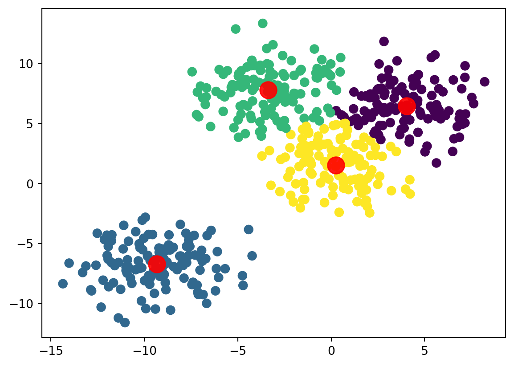
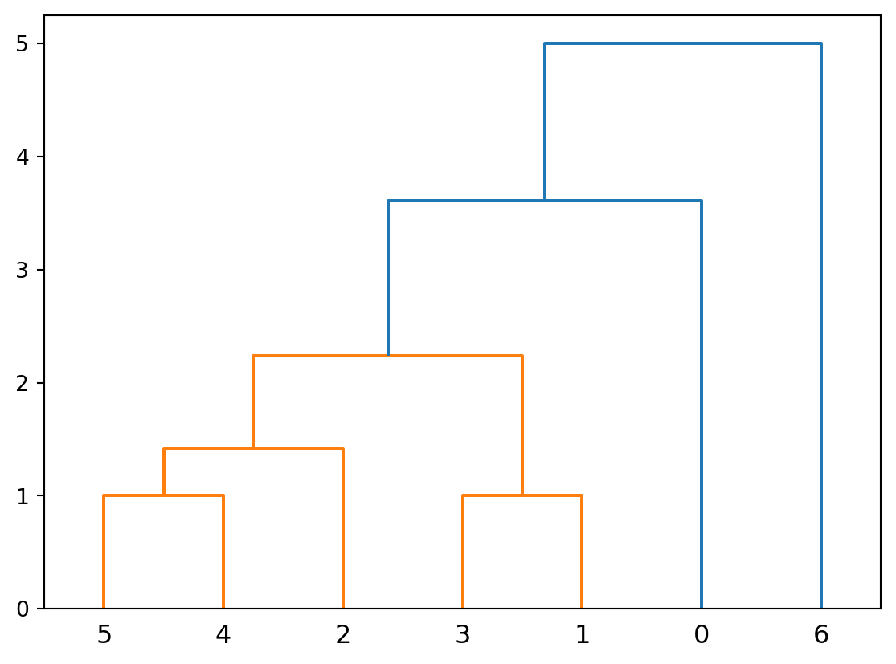
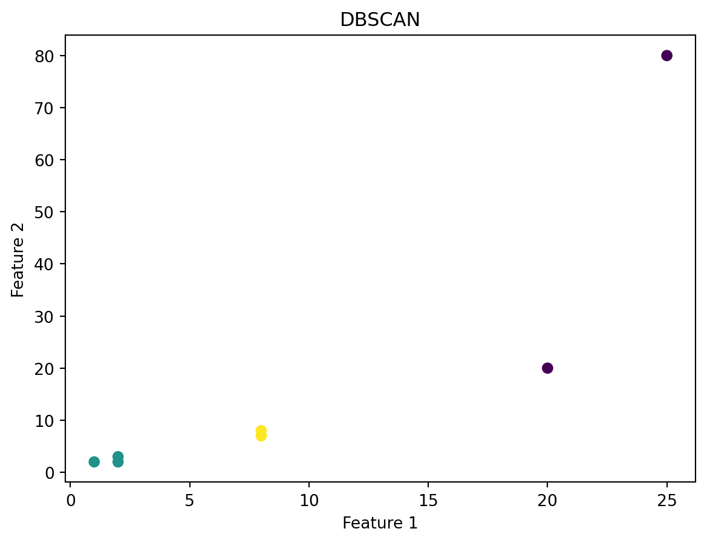
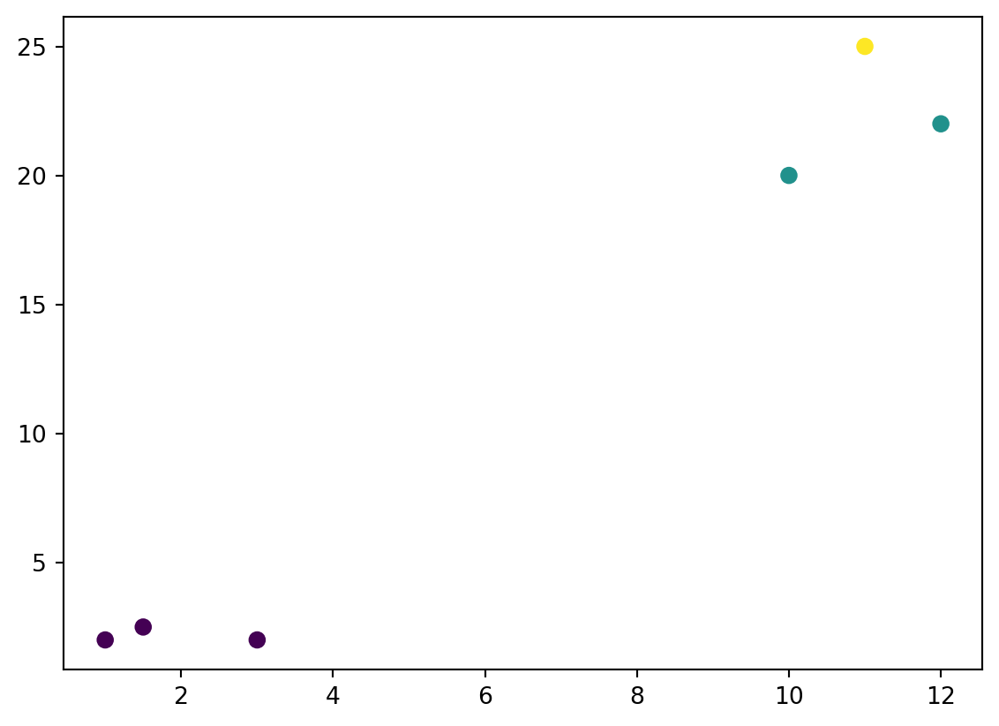

import numpy as np
import matplotlib.pyplot as plt
from sklearn.cluster import KMeans
from sklearn.datasets import make_blobs
from sklearn.metrics import silhouette_score
from sklearn.metrics import calinski_harabasz_score
from sklearn.metrics import davies_bouldin_score
from scipy.cluster.hierarchy import linkage
from scipy.cluster.hierarchy import dendrogram
from sklearn.cluster import DBSCAN
from sklearn.mixture import GaussianMixtureThis post gives detailed descriptions and analysis about Clustering.
Introduction to Clustering
Clustering a machine learning technique used to group data points together based on similarities. It can reveal patterns and other common themes to allow accurate predictions and assumptions to be made. Throughout this post, we will dive deeper into probability theory in machine learning using Python, Scikit-learn, and Tensorflow highlighting the importance of this concept. There will also be several data visualizations and executable code chunks to emphasize these points.
Important Algorithms and Values
There are a some types of algorithms and variables that are important to understand for a basis. Some of them include:
K-Means Clustering- Groups data into k number of groups. Efficient for large data sets.
Hierarchical Clustering- Builds a hierarchy of clusters using either top-down or bottom-up manners.
DBSCAN- Finds clusters based on density. Can detect arbitrary shapes and ignores outliers.
Gaussian Mixture Models- Uses a probabilistic model to assume data comes from from a mixture of Gaussian Distributions. Soft clustering.
Silhouette coefficient- Quantifies how tightly groups data points are within a cluster to other clusters. Ranges from -1 to 1.
Calinski-Harabasz Index- Computes ratio of cluster-to-cluster dispersion, as well as inter cluster dispersion. Higher values claim they are dense.
Davies-Bouldin- Calculates average similarity between each cluster and its most similar one. Lower value means more separation between clusters.
These algorithms and variables are used in several fields such as statistics, machine learning, finance, engineering, medicine, science, and more.
Step 0:
This step is to ensure that required libraries are installed on the machine before proceeding.
--- pip install numpy matplotlib scikit-learn ---This step installs the required libraries to run the code below. Ensure python is installed on the machine already and the terminal has admin access when running this command.
Step 1:
When using Python, we have to import some libraries that will be utilized throughout the Classification process.
Some of the imports include numpy for data manipulation, matplotlib for data visualization, and different sklearn libraries to illustrate different clustering terms.
Step 2:
Illustrate K-Means Clustering.
# Generate sample data
X, y = make_blobs(n_samples=500, n_features=2, centers=4, cluster_std=1.8, random_state=101)
# K-means clustering
kmeans = KMeans(n_clusters=4, n_init=10)
kmeans.fit(X)
y_kmeans = kmeans.predict(X)
# Plot k-means clusters
plt.scatter(X[:, 0], X[:, 1], c=y_kmeans, s=50, cmap='viridis')
centers = kmeans.cluster_centers_
plt.scatter(centers[:, 0], centers[:, 1], c='red', s=200, alpha=0.9)
plt.show()
# Evaluate clusters
print("Silhouette Coefficient: ", silhouette_score(X, y_kmeans))
print("Calinski-Harabasz Index: ", calinski_harabasz_score(X, y_kmeans))
print("Davies-Bouldin Index: ", davies_bouldin_score(X, y_kmeans))
Silhouette Coefficient: 0.5494869398680785
Calinski-Harabasz Index: 1384.0339615400558
Davies-Bouldin Index: 0.6150394374843552As the graph above displays, there are 4 clear groups of data points, as separated by the colors. The silhouette coefficient score of 0.549 indicates that the clusters are well separated and compact. It could be better, but it is still decent. The Calinski-Harabasz Index score of 1384 indicates that data there is good density and separation, as well as good cluster validity. The Davies-Bouldin Index score of 0.615 indicates that that there is moderate separation between clusters with a little overlap. Users can make valid assumptions based on just the scores, however, when looking at the graph, we can see the assumptions made from the scores line up exactly with how the graphs look. These values are very important for statisticians to make their predictions.
Step 3:
Illustrate Hierarchical clustering.
# Generate sample data
X = [[1,1], [3,4], [4,7], [3,5], [5,6], [6,6], [9,10]]
# Perform hierarchical clustering
linked = linkage(X, 'single')
# Plot the dendrogram
dendrogram(linked,
orientation='top',
distance_sort='descending',
show_leaf_counts=True)
plt.show()
When examining the graph above, there are several evident clusters that were created. There are 6 clear clusters that are shown. some data points are very similar, such as 3 and 1 and 4 and 5. However, some data points such as 2 and 6 are way farther apart, showing a lack of similarity between those points. This dendrogram essentially displays how close points are to each other, or similarity, with the distance between the values being the key marker.
Step 4:
Illustrate DBSCAN clustering.
# Generate sample data
X = np.array([[1, 2], [2, 2], [2, 3],
[8, 7], [8, 8], [20,20], [25, 80]])
# Perform DBSCAN clustering
dbscan = DBSCAN(eps=3, min_samples=2)
y_dbscan = dbscan.fit_predict(X)
# Plot clusters
plt.scatter(X[:, 0], X[:, 1], c=y_dbscan)
plt.title("DBSCAN")
plt.xlabel("Feature 1")
plt.ylabel("Feature 2")
plt.show()
When looking at the graph above, we can see several points that are grouped together based on color. The reason that they are grouped together is because of proximity to other points. There are core points there, and the other points are chosen based on their proximity to those points, hence the reason the grouping is as it is.
Step 5:
Illustrate Gaussian Mixture Models.
# Generate sample data
X = np.array([[1, 2],
[1.5, 2.5],
[3, 2],
[10, 20],
[11, 25],
[12, 22]])
# Fit Gaussian Mixture Model
gmm = GaussianMixture(n_components=3)
gmm.fit(X)
# Predict cluster labels
y_gmm = gmm.predict(X)
# Plot clusters
plt.scatter(X[:,0], X[:,1], c=y_gmm, s=40, cmap='viridis')
plt.show()
When analyzing the data points, we can clearly see 3 different colors for the different data points. The yellow group is could be based on the similarity on high y-axis values, the purple with high x-axis values, while the turquoise group is based on low x and y axis values. This graph can be useful to a viewer because if they were adding another point, they can take a valid guess as how it would be grouped.
Conclusion:
As shown throughout this post, the use of Clustering is important in creating predictions and analyzing current data. Through different algorithms and variables, we are able to visualize the different data sets and make educated predictions and assumptions about the data. There were several graphs that were created, and by analyzing those, we could see the potential of creating predictions for future data points. The practical uses of clustering are endless and it will continue to get more efficient and accurate. By using these concepts in Machine Learning, the machine has the ability to implement these formulas and make accurate guesses too. Throughout this blog post, only a few topics were explored, however, there are dozens more out there that all serve their own individual purpose.